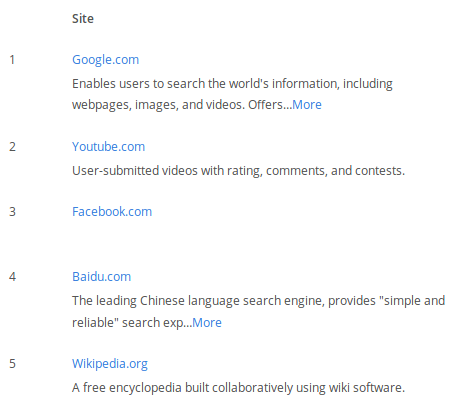

<!doctype html>
<html lang="en">

	<head>
		<meta charset="utf-8">

		<title>Beni comuni digitali</title>

		<meta name="description" content="Beni comuni digitali">
		<meta name="author" content="Andrea Zanni">

		<meta name="apple-mobile-web-app-capable" content="yes" />
		<meta name="apple-mobile-web-app-status-bar-style" content="black-translucent" />

		<meta name="viewport" content="width=device-width, initial-scale=1.0, maximum-scale=1.0, user-scalable=no">

		<link rel="stylesheet" href="reveal.js/css/reveal.css">
		<link rel="stylesheet" href="reveal.js/css/theme/black.css" id="theme">

		<!-- For syntax highlighting -->
		<link rel="stylesheet" href="reveal.js/lib/css/zenburn.css">

		<!-- If the query includes 'print-pdf', use the PDF print sheet -->
		<script>
			document.write( '<link rel="stylesheet" href="reveal.js/css/print/' + ( window.location.search.match( /print-pdf/gi ) ? 'pdf' : 'paper' ) + '.css" type="text/css" media="print">' );
		</script>

		<!--[if lt IE 9]>
		<script src="reveal.js/lib/js/html5shiv.js"></script>
		<![endif]-->
	</head>

	<body>

		<div class="reveal">

            <div class="slides">

                
<section data-markdown data-separator="^\n---\n$" data-separator-vertical="^\n--\n$" data-notes="^Note:">
<script type="text/template">

<!-- .slide: data-background="#bb0000" -->

##Beni comuni digitali

[Andrea Zanni](http://aubreymcfato.com)

[@aubreymcfato](http://twitter.com/aubreymcfato)


#######IGFItalia2017

---

<!-- .slide: data-background="#bb0000" -->
Da sempre, economisti e politici si interrogano sulla gestione delle risorse naturali all'interno della società.
<!-- per questo, ci siamo inventati due modalità principali per gestirle...-->

--

<!-- .slide: data-background="#bb0000" -->
lo Stato e il Mercato, il pubblico e il privato. 

--

<!-- .slide: data-background="#bb0000" -->
C'è una terza via: i beni comuni. 

--

<!-- .slide: data-background="#bb0000" -->
_La tragedia dei beni comuni_.

(Garrett Harding, 1968)

--

<!-- .slide: data-background="#bb0000" -->
_Free riding_, inquinamento, competizione per l'uso, sfruttamento eccessivo:
alcuni attori possono rovinare il bene comune, a danno di tutti. 

--

<!-- .slide: data-background="#bb0000" -->
Secondo Elinor Ostrom, il bene comune è definito da:
* Confini chiaramente definiti; <!--  (chiara definizione dei contenuti del bene comune ed effettiva esclusione di attori esterni che non hanno diritto a parteciparne) --> 
* Regole che riguardano l’appropriazione e l'offerta delle risorse comuni;
* Modalità di scelta collettiva che permettono alla maggior parte dei membri di partecipare al processo decisionale;
* Monitoraggio effettivo da parte dei membri (o da persone che ai membri devono rendere conto);

--

<!-- .slide: data-background="#bb0000" -->
* Uno spettro di sanzioni progressivi per chi viola le regole della comunità;
* Meccanismi di risoluzione dei conflitti che siano poco costose e di facile accesso;
* Autodeterminazione della comunità riconosciuta dalle autorità di alto livello;
* In caso di beni comuni più grandi, l’organizzazione è nella forma di livelli multipli di imprese annidate, con beni comuni più piccoli al livello base.

---

<!-- .slide: data-background="#bb0000" -->
da risorse scarse a risorse abbondanti: i _beni comuni digitali_.

--

<!-- .slide: data-background="#bb0000" -->
+ azione collettiva
+ autogoverno
+ capitale sociale

--


<!-- .slide: data-background="#bb0000" -->
Gli atomi sono pesanti e costosi da spostare. 
Inoltre sono _unici_. 

--

<!-- .slide: data-background="#bb0000" -->
I bit hanno il _teletrasporto_ e la _copia infinita_. 

--

<!-- .slide: data-background="#bb0000" -->
La rete crea una nuova _fisica_.

--

<!-- .slide: data-background="#bb0000" -->
conoscenza = bit

--

<!-- .slide: data-background="#bb0000" -->
Se tu hai una mela, ed io ho una mela, e ce le scambiamo, allora tu ed io abbiamo sempre una mela per uno.
Ma se tu hai un’idea, ed io ho un’idea, e ce le scambiamo, allora abbiamo entrambi due idee.

--

<!-- .slide: data-background="#bb0000" -->
Il copyright classico è basato sul concetto di _copia singola_. 

--

<!-- .slide: data-background="#bb0000" -->
Stiamo ancora cercando di trovarne uno nuovo adatto, e nuovi business model. 

--

<!-- .slide: data-background="#03004d" -->
<!-- nuovo copyright-->
Creative Commons: alcuni diritti riservati.

--

<!-- .slide: data-background="#03004d" -->

+ Si può copiare
+ Si può redistribuire
+ Si può modificare, remixare, creare opere derivate

--

<!-- .slide: data-background="#03004d" -->

+ Linux
+ [Wikipedia](http//it.wikipedia.org)
+ [Zooniverse](http://zooniverse.org)
+ [StackOverflow](https://stackoverflow.com/)
+ [OpenStreetMap](http://www.openstreetmap.org/)
+ letteratura scientifica ad accesso aperto

---

<!-- .slide: data-background="#006633" -->
###Wikipedia
Enciclopedia multiplingue senza redazione, scritta e controllata da volontari, modificabile da chiunque, autogovernata, 
rilasciata in licenza libera (CC-BY-SA), completamente trasparente, software open source. 

--

<!-- .slide: data-background="#006633" -->
Wikipedia non dovrebbe esistere:
tutti la possono copiare, tutti possono scaricarla e rivenderla, la sua sostenibilità è basata sulla buon volontà di una comunità di volontari.  

--

<!-- .slide: data-background="#ffffff" -->
</img>

([Alexa.com](http://alexa.com/topsites))

---

<!-- .slide: data-background="#006633" -->
I progetti Wikimedia, negli anni, hanno espresso una governance complessa, 
composta di associazioni no profit, fondazioni, comunità online. 
<!-- fare qualche esempio: WMF paga elettricità, manutenzione, sviluppo software, e finanzia le associazioni nazionali; le associazioni lavorano con le istituzioni (scuole, università, biblioteche, musei); le comunità online gestiscono i progetti online -->


<!-- .slide: data-background="#0A2A34" -->

--

<!-- .slide: data-background="#ffffff" -->

--

<!-- .slide: data-background="#03004d" -->

--

<!-- .slide: data-background="#006633" -->

--

<!-- .slide: data-background="#1d9608" -->
Ibridazione fra pubblico e privato, online e offline,
_top-down_ e _bottom-up_.

--

<!-- .slide: data-background="#1d9608" -->
Licenze libere, procedure e formati aperti, codice aperto. 

--

<!-- .slide: data-background="#1d9608" -->
Nonostante tutto, se c'è una cosa che nel web funziona, 
sono i beni comuni digitali. 

--

<!-- .slide: data-background="#1d9608" -->
##Grazie

--

<!-- .slide: data-background="#1d9608" -->
Slides:
##babele.io/slides/commons
</script>
</section>


            </div>

		</div>

		<script src="reveal.js/lib/js/head.min.js"></script>
		<script src="reveal.js/js/reveal.js"></script>

		<script>

			// Full list of configuration options available here:
			// https://github.com/hakimel/reveal.js#configuration
			Reveal.initialize({
				controls: true,
				progress: true,
				history: true,
				center: true,

				theme: Reveal.getQueryHash().theme, // available themes are in /css/theme
				transition: 'default', // default/cube/page/concave/zoom/linear/fade/none

                

				// Optional libraries used to extend on reveal.js
				dependencies: [
					{ src: 'reveal.js/lib/js/classList.js', condition: function() { return !document.body.classList; } },
					{ src: 'reveal.js/plugin/markdown/marked.js', condition: function() { return !!document.querySelector( '[data-markdown]' ); } },
					{ src: 'reveal.js/plugin/markdown/markdown.js', condition: function() { return !!document.querySelector( '[data-markdown]' ); } },
					{ src: 'reveal.js/plugin/highlight/highlight.js', async: true, callback: function() { hljs.initHighlightingOnLoad(); } },
					{ src: 'reveal.js/plugin/zoom-js/zoom.js', async: true, condition: function() { return !!document.body.classList; } },
                    
					{ src: 'reveal.js/plugin/notes/notes.js', async: true, condition: function() { return !!document.body.classList; } }
                    
                    
				]
			});

		</script>

	</body>
</html>
